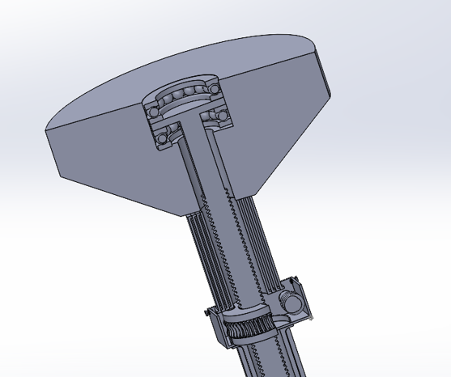
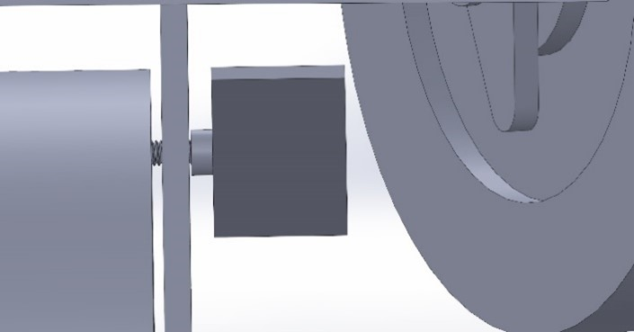
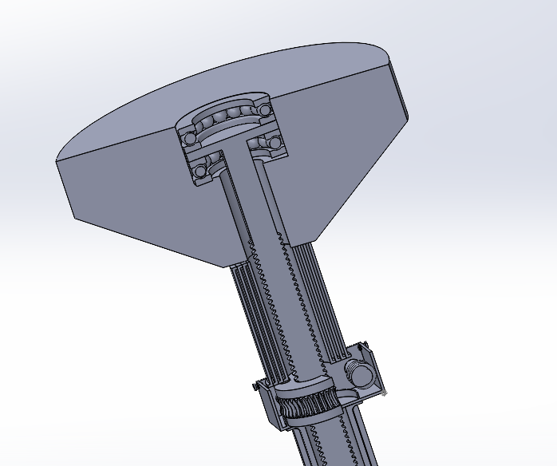
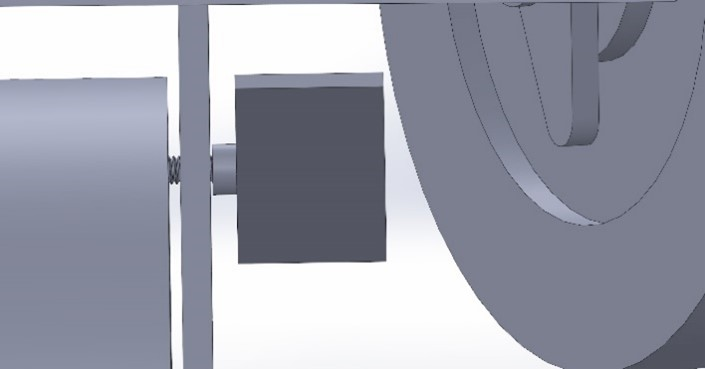

Manual Standing Desk
The last year or so has been a hard hit on everyone due to COVID-19. From adapting to online school to working remotely, we have significantly increased our time spent sitting at a desk which can result in detrimental health problems down the road. As a result, I partnered with Yanshen Zhou and Jaylon Laidlaw in one of my engineering design courses (ME101) to prototype a manual standing desk which can combat this issue. Sit and stand at your own will with ease by simply elevating the height of the desk.
Skills and Tools
- SolidWorks
- FEA Analysis
- Engineering Design/Analysis
- Material Selection
1Engineering Design
Before I could fully grasp a concept design, I conducted research on current market standing desks and answered vital questions required to make a successful prototype. Some vital questions included "Who are the targetted users?" and "How can a standing desk be made better and more efficient than current market standing desks?". Moving on from a more general take on the problem, we decided to draft concept designs based on a Needs Analysis.
Table 1 Engineering Specifications of Standing Desk| No. | Characteristic | Relation | Value | Units | Verification Method | Comments |
| 1 | Must elevate desk to desired standing height (Functional Requirement) | >= and <= | 30 and 46 | inches | analysis | Measure the minimum and maximum additional elevation that the desk gains and verify that it is within range |
| 2 | Must be portable and able to be moved quickly with the ability to be locked in place (Non-Functional Requirement) | N/A | N/A | N/A | analysis | Analyze the portability and ease of moving (analyzing resistance and smoothness of moving). |
| 3 | Must withstand desk weight and weight of objects placed on desk (Functional Requirement) | >= and <= | 0 and 150 | kg | analysis | Perform an FEA simulation on the applicable components of the table. |
| 4 | Must not tip over and keep desk at a level surface (Constraint Requirement) | < | 5 | degrees | analysis | Measure the desk surface with a level to verify that its surface is not tilted more than 5 degrees. |
| 5 | Must not make noise during elevation (Non-functional Requirement) | N/A | N/A | N/A | examination | Must not make any noise during elevation or adjusting (which may otherwise be presented in other products like ours) |
| 6 | Must be within cost range (Constraint Requirement) | >= and <= | 0 and 1000 | CAD ($) | analysis | Add the estimated cost of manufacturing costs, materials, and labour |
| 7 | Must be easy and intuitive to use (Non-functional Requirement) | < | 5 | minutes | test | Must be intuitive and easy to user and user should know how to use it within 5 minutes. Sample of 20 people and at least 80% must be able to use within 5 minutes. |
| 8 | Must be intuitive and easy to user and user should know how to use it within 5 minutes. Sample of 20 people and at least 80% must be able to use within 5 minutes. | N/A | N/A | N/A | demonstration | Must be used identically to a regular non-adjustable table and must not interfere with regular use of table. |
As shown above, A table of Functional, Non-functional, and Constraint Requirements were made to narrow our scope and help us establish feasible concept design solutions. Using a Decision Matrix, we were able to narrow ourselves to one design based on criteria such as performance, safety, feasibility of schedule, cost, environmental impact, ease of use, and aesthetics. In the sections below, I'll walk you through some of the key points in developing, testing, verifying, and prototyping our manual standing desk.
2Anthropometric Data and Ergonmics
In order to determine our general dimensions before modelling a prototype using SolidWorks, I consulted anthropometric data to decide on common body part measurements to determine the most ideal dimensions which would cater to most of the population. With our user in mind, we looked at the top 97th eprcentile in terms of standing and sitting height, as well as common table top dimensions.

Example anthropometric data retrieved
You can find the anthropometric data we used here.
3Mechanical Design
For our vertical lift mechanism, we decided to go with a variation of a screw jack, involving the use of a lead screw, worm gear, and worm screw. This mechanism was selected since it proved to be relatively more safe, quiet, and efficient (due to the absence of an electric or pressurized system) based on research. By taking advantage of gear ratios and reducing the torque required to operate the lift mechanism, users can easily adjust the height of their desk.
Worm gear and worm screw used in lift mechanism
Users can turn a lever which in turn, rotates the worm screw, worm gear, and lead screw, converting rotational motion into linear motion and adjusting the desk height. With the addition of collapsible teloscopic tubes, we are able to constrain the movement and range of the leadscrew as well as encase the lead screw for safety concerns. Other notable mechanisms included are ball bearings to stop the tabletop from rotating along with the leadscrew and locks on the polyurethane wheels for safety reasons.

 



Gallery of lift mechanism, telescopic tubes, ball bearings, and polyurethane wheels with locks
Manual standing desk in action with removed tabletop
4Material Selection
For different components of our standing desk, we selected materials based on desirable traits and criteria that would optimize the prototype. Below are a few of the criteria we considered for some of the components. We used GRANTA EduPack 2020 software and their database to retrieve numerical values for microstructural properties.
Example of comparison table which analyzes favourable criteria of material
We decided on an Alluminum Alloy for the table structure, Tempered Soda Lime Glass for the table top, and Polyurethane Caster Wheels
5Finite Element Analysis (FEA)
A notable verification processes we utilized was FEA to verify our engineering specifications and if the requirements we set could be met. In this process, we took individual components which would be kept under stress during the use of the desk and analyzed them witht he maximum load in mind.
Series of FEA on multiple components under stress during desk use
If you would like to see more, take a look at our written report and analysis!